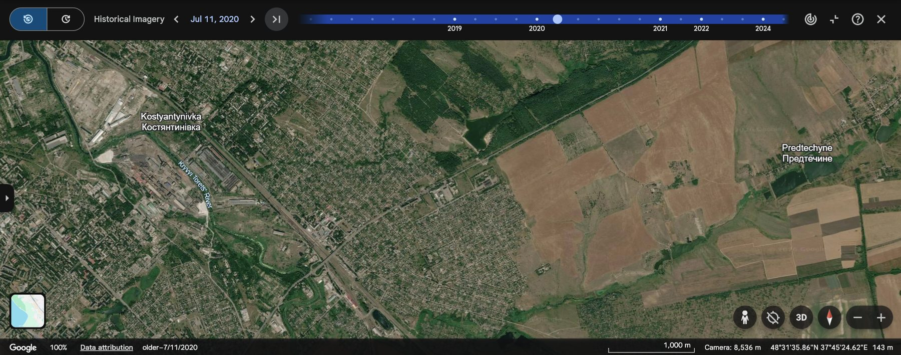
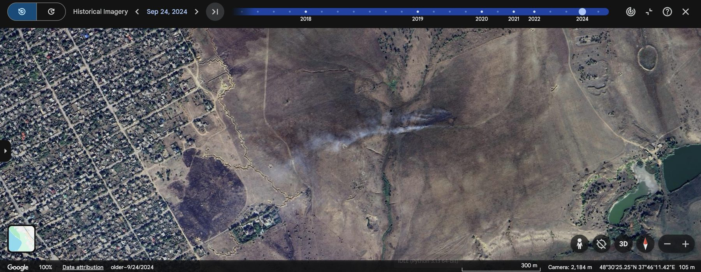

Terrain mapping
Four years on the eastern approaches
Kostiantynivka anchors the southern end of Ukraine's "Fortress Belt," the fortified cities Russia must take to complete its seizure of Donetsk Oblast. Russian forces continued offensive operations in and near the city through October 2026, and by March 2026 only about 2,000 of its 67,000 pre-war residents remained.
Dense housing fills the valley floor, an industrial zone follows the rail line, and fields, a reservoir and wooded ravines cover the rising ground to the east. That high ground offers observation but little concealment, so forces dig in along the urban edge and in the ravines, and fire concentrates there. Following Murdock and Clark (2015), the analysis is organized around GEOINT's three contributions to situational awareness: terrain mapping, detecting movement and identifying physical change.

The two frames cover the same area from slightly different camera positions. Compare land cover, not exact pixel positions.
Detected change and movement
What the September 2024 imagery shows

One frame cannot measure crater density across the sector. University of Maryland researchers mapped about 2.5 million artillery and rocket impacts along the 2022 front lines, and an FAO-supported survey of four northern regions found more than 1.09 million craters in fields. Neither study covers Kostiantynivka, so both serve as evidence of a pattern, not measurements of this sector.
Assessment
Judgments and what would change them
By September 2024, the area east of Kostiantynivka had become abandoned, cratered and repeatedly burned ground, with earthworks reaching the city's residential edge.
The damage has intensified since, based on reporting of continued fighting in and around the city. No public imagery available to me confirms it.
The longest-lasting impact will fall on farmland, where unexploded ordnance and disturbed soil will keep fields out of production long after the fighting ends.
Alternative explanation considered
Farmers burning crop stubble can leave similar scars. Cultivation in the sector had stopped, and the burns sit beside trench lines and impact points, so combat-related ignition is the more likely cause.
Would lower confidence
- New imagery showing renewed cultivation
- No fresh burn scars or craters in later captures
Would signal escalation
- Earthworks extending into the residential grid, indicating the fighting had moved into the city itself
Filling intelligence gaps through tasking
What free imagery cannot answer
| Gap | Collection that closes it | Who |
|---|---|---|
| Currency | The newest public imagery is two years old. Commercial very-high-resolution collection with near-daily revisit would allow week-to-week change detection. | NGA, coordinating with the National Reconnaissance Office; Maxar, Planet |
| Weather | Radar is an all-weather change-detection tool and would track change through winter overcast. | Commercial SAR providers; Sentinel-1 |
| Contamination | Imagery shows disturbed ground, not what is in the soil. Field sampling and crater-density maps would measure contamination and set clearance priorities. | Ukraine's environmental inspectorate; FAO; demining authorities |
| Ground truth | Geolocated social media from the sector, which Murdock and Clark identify as an emerging GEOINT source, plus independent damage assessments. | ODNI Open Source Enterprise; UNOSAT; UN Environment Programme |
Sources
References
- Censor.net. (2026). City that barely exists: "Khyzhak" unit showed neighbourhoods of Kostiantynivka burnt down by Russians. censor.net. Ukrainian police reporting relayed by a Ukrainian outlet; population figures unverified.
- Duncan, E. C., Skakun, S., & Becker-Reshef, I. (n.d.). Identification and mapping of missile craters and unexploded ordnance in agricultural fields in Ukraine using very high spatial resolution satellite imagery [Presentation]. University of Maryland. nationalacademies.org
- Interfax-Ukraine. (2026, April 9). In northern Ukraine, more than 10,000 hectares of arable land damaged by war, with more than 1 mln craters recorded on fields – FAO. interfax.com.ua
- Murdock, D., & Clark, R. M. (2015). Geospatial intelligence. In M. M. Lowenthal & R. M. Clark (Eds.), The five disciplines of intelligence collection (pp. 111–158). CQ Press.
- Shymkiv, K., Sher, A., Neuman, A., & Hird, K. (2026, October 15). Russian offensive campaign assessment, October 15, 2026. Institute for the Study of War & AEI Critical Threats. criticalthreats.org. Think tank drawing on open sources and commercial imagery.